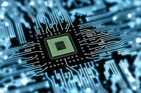

Computer professionals must have good reasoning and logical problem solving abilities, be observant, alert to detail, and tenacious in pursuing problems to completion. The Computer Science programs at Northwestern Polytechnic offer students an opportunity to integrate extensive software development skills with hardware skills. Emphasis in various programs include: computer graphics and image processing, digital hardware, data communications and networking. Hardware facilities include dedicated circuit design and robotics lab, data communications and networking lab, as well as six general access computer labs. As a graduate of the two-year diploma at Northwestern Polytechnic, students are qualified for positions in development including hardware and networking components, game programming, database applications, PC support, networking specialist, financial systems development, etc. Typically, graduates work as programmer analytics and network administrators.
Visit NWP Website
The Computer Science programs at Northwestern Polytechnic offer students an opportunity to integrate extensive software development skills with hardware skills. Emphasis in various programs include: computer graphics and image processing, digital hardware, data communications and networking. Hardware facilities include dedicated circuit design and robotics lab, data communications and networking lab, as well as six general access computer labs. As a graduate of the two-year diploma at Northwestern Polytechnic, students are qualified for positions in development including hardware and networking components, game programming, database applications, PC support, networking specialist, financial systems development, etc. Typically, graduates work as programmer analytics and network administrators.
Visit NWP Website
The Bachelor of Computing Science program gives learners a solid foundation in the technical, communication and hands-on skills needed to excel as a computing science professional. Explore a myriad of different areas such as computer games, networking and communications, big data, cloud computing, database development, artificial intelligence, machine learning, robotics, computer graphics, and mobile applications. Virtually every industry in the world makes use of computer technology and computing science graduates are essential in developing the applications that drive those industries further.
Visit NWP Website